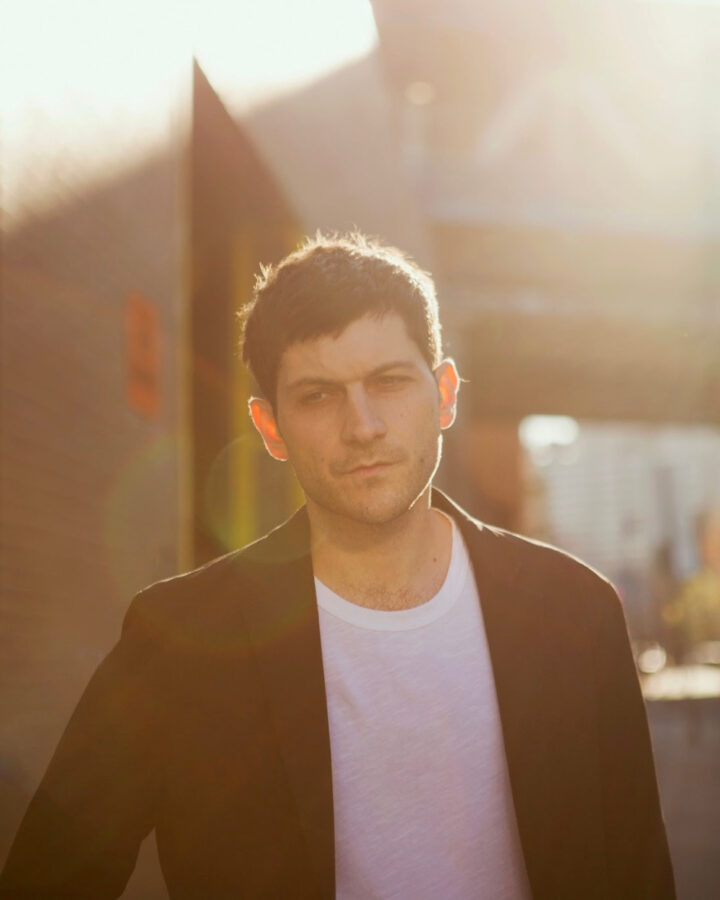

Eli Keszler: Performance
Eli Keszler is a Grammy-nominated artist, composer, and percussionist based in New York. Whether performing an improvised solo set at the drum kit or writing an electro-acoustic score for a film, he brings an agile experimentation to his work. For this site-specific appearance, Keslzer performs live in the gallery space in the afternoon light. Within this unique architectural and acoustic setting, he offers his own take on some of the dynamics at play in Leah Ke Yi Zheng’s exhibition, including change and variation, iterative multiplicity, and logics of impermanence. Keslzer has previously worked with a wide range of artists including Oneohtrix Point Never, Laurel Halo, Jordan Wolfson, Kevin Beasley, and Laure Prouvost, to name just a few.
On February 15, access to our current exhibition, Leah Ke Yi Zheng: Change, I Ching (64 Paintings), is limited until 3pm for this performance.
Keszler has garnered critical acclaim for his solo records released through labels such as LuckyMe, Shelter Press, Empty Editions, ESP-DISK’, PAN, and REL Records. His original film scores include Olmo Schnabel’s Pet Shop Days, which premiered at La Biennale Di Venezia (2023); Lofty Nathan’s Harka (2022); and Dasha Nekrasova’s The Scary of Sixty First (2021); among many others. As a composer, Keszler has received commissions from esteemed institutions and ensembles, including the Icelandic Symphony Orchestra, ICE Ensemble, Brooklyn String Orchestra, and So Percussion. His music, installations, and visual works have been showcased internationally in venues including the Whitney Museum, Cologne Philharmonie, Lincoln Center, MIT List Center, Victoria & Albert Museum, Museum of Modern Art, Sculpture Center, The Kitchen, Hessel Museum, Harvard’s Carpenter Center for the Visual Arts, Barbican-St. Luke’s, Walker Art Center, LAX Art, and MoMA PS1.